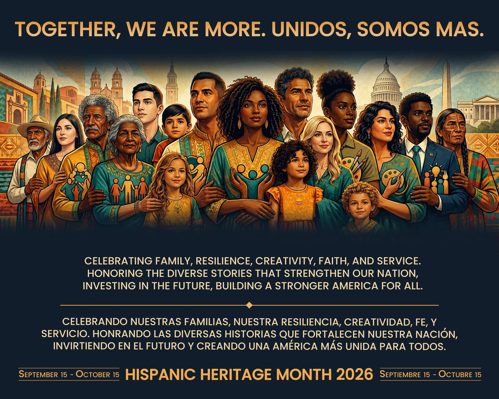

Hispanic History
There are many historic Hispanics who have paved the way and influenced the next generation of Hispanics everywhere. These Hispanic leaders have made important contributions that continue to influence their communities tremendously. Their accomplishments inspire the youth, showing them that they too can break barriers and make a difference in the world they live in.
Leaders such as Dolores Huerta, Julian Castro, and Cesar Chavez broke barriers in their fields and opened the door for others to follow. Lin Manuel Miranda, Roberto Clemente, and Selena Quintanilla are all icons who left powerful and inspiring legacies through their talent and cultural impact. These accomplishments remind young Hispanics that they can become leaders and make meaningful changes in the world around them.

Hispanic Culture
Many Hispanic families live in different countries, but many share similar cultural traditions. One meaningful custom is the way younger people greet their elders. In many Hispanic households, greetings often include a kiss on the cheek, but when addressing elders, it is common to ask for a blessing by saying "bendicion." The elder responds with "Dios te bendiga," which means may God bless you. This exchange reflects deep respect, love, and the importance of family values across Hispanic cultures.
Another tradition many Hispanic families share is gathering for major holidays. Whether they live in the United States, the Caribbean, Central America, or South America, family celebrations are a big part of Hispanic culture. Holidays like Thanksgiving and Christmas often include large family dinners where relatives come together to cook, eat, laugh, and spend time with one another. These gatherings strengthen family bonds and keep cultural traditions alive across generations.
I added the .highlight class to the resource descriptions so they stand out more and make the page easier to read. I already had enough element selectors, so I didn't need to add any new ones. I used the #main-content ID only on the index page because it improved the layout and made the homepage look cleaner. I added the whole “Celebrating Heritage” section so I could use the .card class, and I like how it looks placed under the picture. I also added the .note class to the top of the resources page because the italics give it a nice touch and help introduce the list of links.